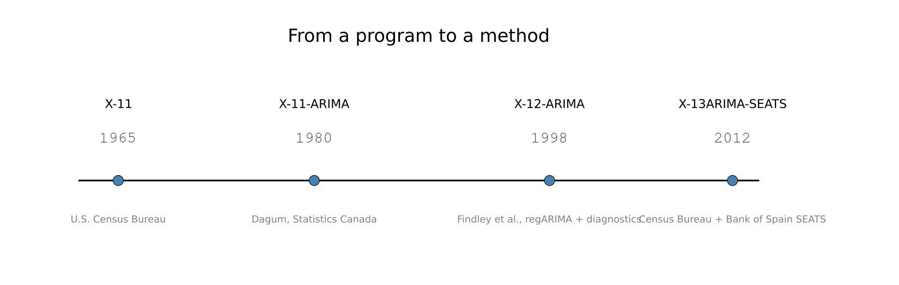
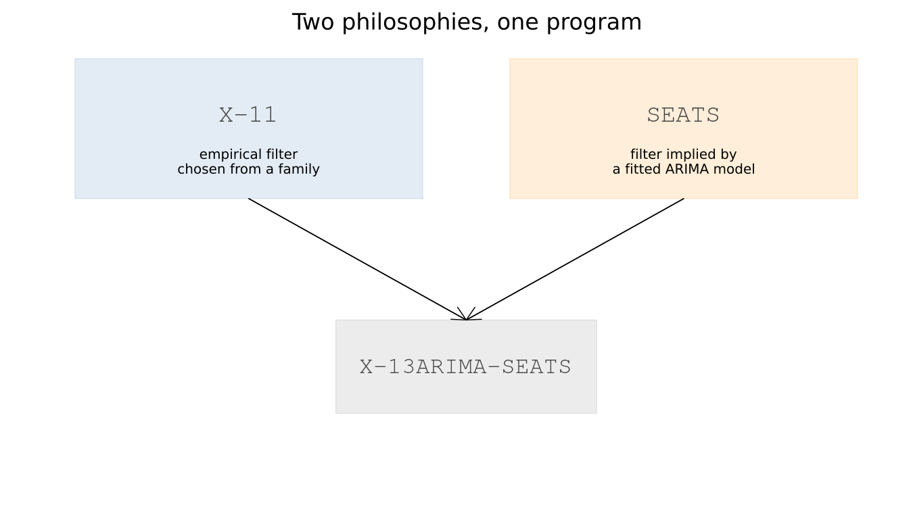

3. Where X-13 Came From
3.1 A program, not a model
Julius Shiskin, at the U.S. Census Bureau, had been working on seasonal adjustment since 1954, and by 1965 the Census Bureau had a program ready to publish. Julius Shiskin, Allan Young and John Musgrave documented it as The X-11 Variant of the Census Method II Seasonal Adjustment Program, Census Bureau Technical Paper No. 15 — dated November 1965, though the paper itself was not formally published until 1967.
The name is worth pausing on for what it says, not for a naming story. It was published as a program — a specific, concrete sequence of moving averages, chosen and refined through over a decade of experimentation — with no underlying statistical model behind it at all. Chapter 4's toy filter is direct evidence that this description is literally accurate: fifteen lines of moving averages and iteration really do produce something close to what X-11 produces, and Chapter 4's own "what the toy leaves out" table is mostly refinements of that same basic procedure, not a different kind of thing entirely.
That absence of an underlying model is exactly what made X-11 immediately useful in practice — it worked, and statistical agencies adopted it — and exactly what made it a source of unease among statisticians for the following decades. A procedure that works but cannot be derived from a stated probability model is hard to reason about formally, however well it performs.
3.2 The end-of-series problem
Chapter 9 has already made this argument in full, with real numbers, so here it gets one paragraph rather than a second telling. X-11's filters are symmetric everywhere except at the two ends of a series, where the future observations a symmetric filter needs do not exist yet — and the asymmetric substitutes used there give the most recent, most-watched months the least reliable estimates and the largest subsequent revisions. Estela Bee Dagum, at Statistics Canada, published a fix in 1980: forecast the series forward with an ARIMA model first, then apply the ordinary symmetric filter to the extended data. The method was named X-11-ARIMA for exactly that reason, and Statistics Canada issued a refined revision, X11ARIMA/88, in 1988.
3.3 The model-based challenge
A separate line of research asked a more fundamental question: rather than smoothing the observed series with a chosen filter, why not fit a statistical model to the series and let the model itself determine the decomposition? Signal-extraction methods along these lines developed through the 1970s and 1980s, and Victor Gómez and Agustín Maravall, at the Bank of Spain, built TRAMO/SEATS into the specific, widely adopted implementation of that idea. Europe's statistical offices largely adopted the model-based approach, while the United States and several other countries kept the X-11 filter-based tradition. Chapter 14 covers what SEATS actually does, in full.
3.4 Convergence
The U.S. Census Bureau's own program kept developing in parallel. X-12-ARIMA, documented by David Findley, Brian Monsell, William Bell, Mark Otto and Bor-Chung Chen in 1998, added the regARIMA front end in the form Part III of this book covers — trading-day and holiday regressors, automatic outlier detection, and most of the diagnostic battery Part V is built around.

X-13ARIMA-SEATS, first released in July 2012, merges the two traditions into one program rather than choosing between them: X-12-ARIMA's own regARIMA and X-11 engine, with the Bank of Spain's SEATS engine included as a genuine second decomposition method, selected with seats = true rather than X-11's own x11{} block.

Two philosophies, one program, and the diagnostic battery as the shared ground both are judged on — Part V applies to an X-11 run and a SEATS run alike, and Chapter 15 uses exactly that shared ground to compare them directly. That framing organises everything from here on: Part II is X-11's philosophy in detail, Part IV is SEATS', Part III is the regARIMA front end both share, and Part V is how either one is actually checked.
A name deliberately not repeated here
Popular retellings of X-11's history often add that "X-11" was named for being the eleventh experimental variant tried. It is a memorable story and it is repeated often. It could not be confirmed against a primary source while writing this chapter, and a book that otherwise verifies its dates and attributions directly is not the place to repeat an anecdote on the strength of how often it is told. If a primary source for it turns up, it belongs here; until then, it stays out.
See also: Chapter 4 for direct evidence of §3.1's "a program, not a model" claim. Chapter 9 for the end-of-series argument only summarised here. Chapter 14 for what SEATS actually does. Chapter 15 for the direct X-11-versus-SEATS comparison this chapter's closing framing sets up.